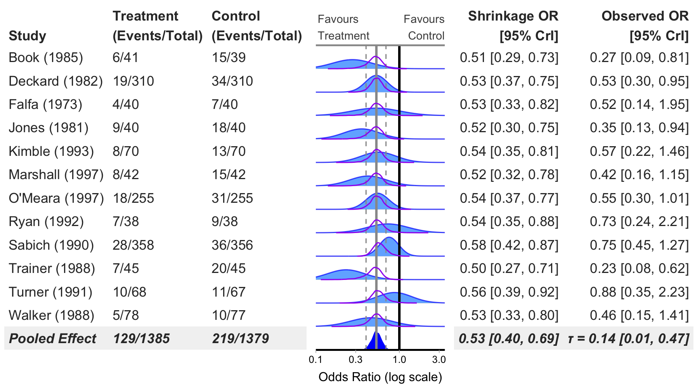
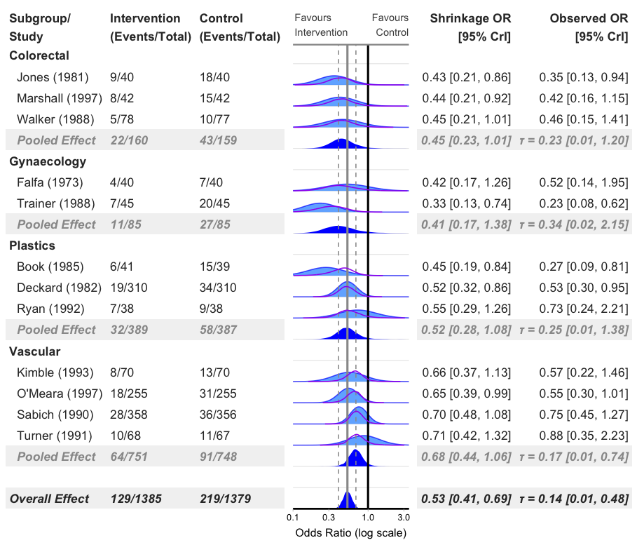
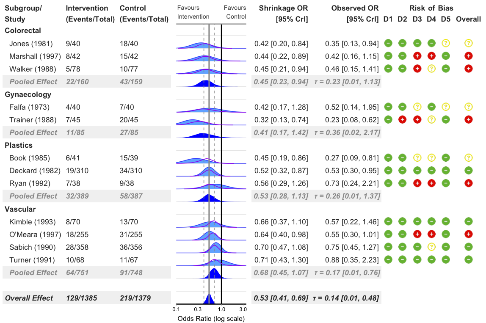
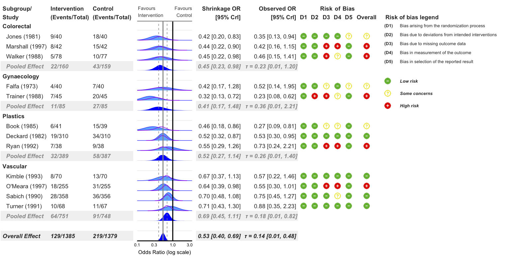
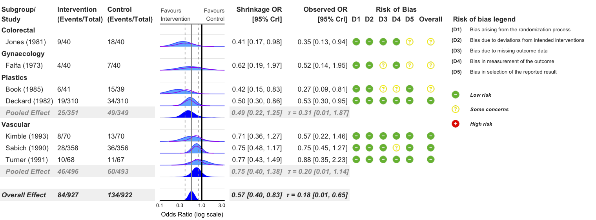
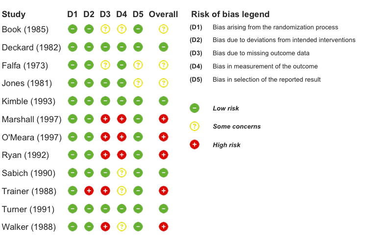

Overview
bayesfoRest is an R package for creating publication-ready forest plots from Bayesian meta-analyses. It provides a comprehensive solution for visualizing meta-analytic results with support for various effect measures, subgroup analyses, and risk of bias assessments.
Key Features
- Bayesian Forest Plots: Create forest plots from brms models with customizable aesthetics
- Multiple Effect Measures: Support for OR, HR, RR, IRR, MD, and SMD
- Subgroup Analysis: Built-in support for subgroup meta-analyses
- Risk of Bias Integration: Seamlessly incorporate risk of bias assessments (RoB2, ROBINS-I, ROBINS-E, QUADAS-2)
- Shrinkage Visualisation: Display shrinkage effects with density plots or point intervals
- ROPE Support: Add Region of Practical Equivalence (ROPE) to plots
- Extensive Customisation: Colours, fonts, labels, and layout
Installation
You can install the development version of bayesfoRest from GitHub:
# install.packages("devtools")
devtools::install_github("BLMoran/bayesfoRest")Basic Usage
Binary Outcome Forest Plot (Odds Ratio)
bayes_forest(
model = model_bin,
data = binary_outcome,
measure = "OR",
xlim = c(0.1, 3.5)
)
Add Subgroups
bayes_forest(
model = model_bin,
data = binary_outcome,
measure = "OR",
subgroup = T,
xlim = c(0.1, 3.5)
)
Add Risk of Bias Columns
bayes_forest(
model = model_bin,
data = binary_outcome,
measure = "OR",
subgroup = T,
add_rob = T,
xlim = c(0.1, 3.5)
)
Add Risk of Bias Legend
bayes_forest(
model = model_bin,
data = binary_outcome,
measure = "OR",
subgroup = T,
add_rob = T,
add_rob_legend = T,
rob_tool = "rob2",
xlim = c(0.1, 3.5)
)
Exclude Studies with High Risk of Bias
bayes_forest(
model = model_bin,
data = binary_outcome,
measure = "OR",
subgroup = T,
add_rob = T,
add_rob_legend = T,
rob_tool = "rob2",
exclude_high_rob = T,
xlim = c(0.1, 3.5)
)
Standalone Risk of Bias Plot
# Create standalone RoB visualization
rob_plot(
data = binary_outcome,
rob_tool = "rob2",
add_rob_legend = TRUE
)
Dependencies
bayesfoRest depends on several R packages:
- brms for Bayesian model fitting
- metafor for meta-analysis preparation
- gt for creating tables
- patchwork for combining plots
- ggplot2 for plotting
- ggdist for density plotting
- tidybayes for tidy workflow
- dplyr, tidyr, purrr for data manipulation
- paletteer for colour palettes
- fontawesome for risk of bias icons
Feedback, Issues and Contributing
We welcome feedback, suggestions, issues and contributions. Please feel free to contact either Ben or Tom with any feedback. For any bugs, please file it here with a minimal code example to reproduce the issue. Pull requests can be made here. Please note that the bayesfoRest project is released with a Contributor Code of Conduct. By contributing to this project, you agree to abide by its terms.